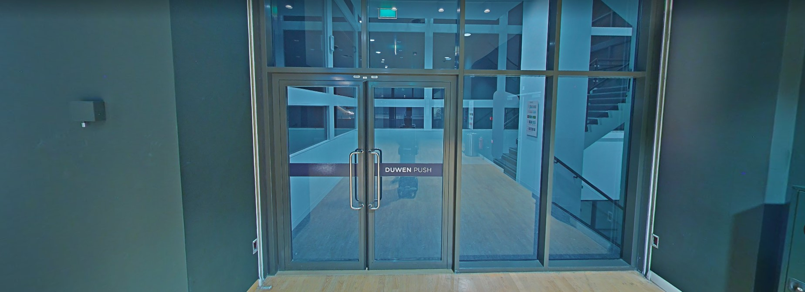
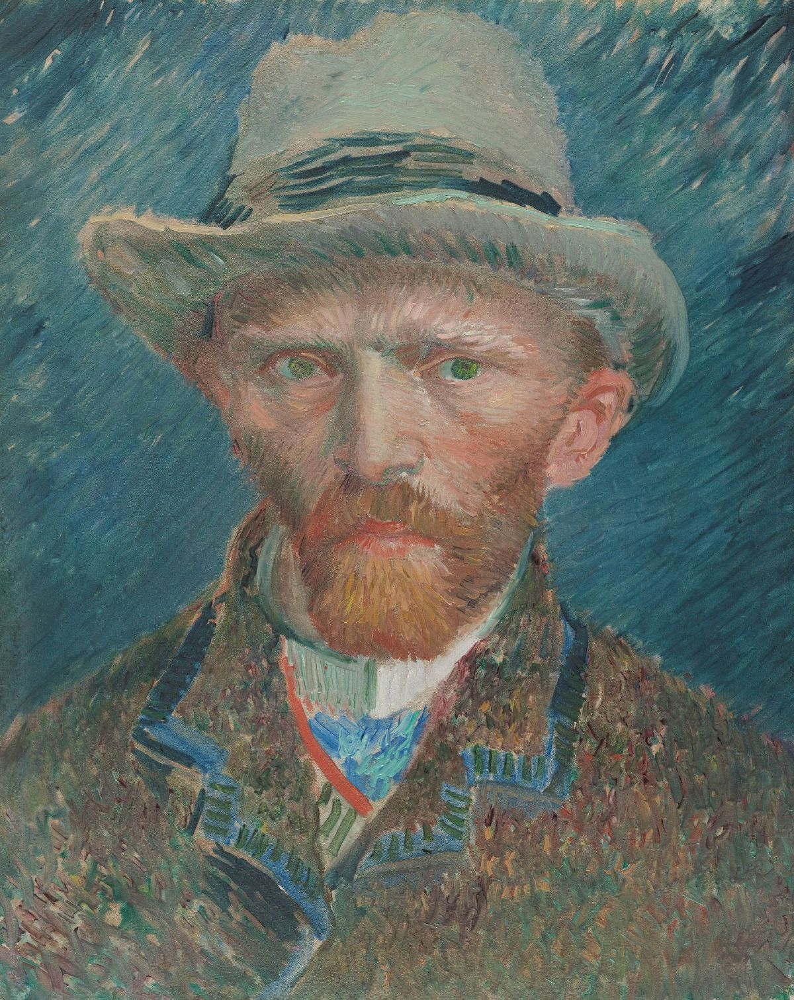

Van Gogh Museum
Discover the Life and Work of Vincent van Gogh
Our LocationExplore Vincent van Gogh's famous paintings and drawings, work by his artist friends and contemporaries, French and Japanese prints and more.
Discover the Life and Work of Vincent van Gogh
Our LocationExplore Vincent van Gogh's famous paintings and drawings, work by his artist friends and contemporaries, French and Japanese prints and more.

Vincent van Gogh's paintings are world famous. Visit the permanent collection and let yourself be carried away in his development as an artist.
See the work of Pissarro, Toulouse-Lautrec and others.
Get to know the life and work of Vincent van Gogh: see his paintings and drawings, read his letters and more.

Design for a Van Gogh Museum was commissioned by the Dutch government in 1963 to Dutch architect and furniture designer Gerrit Rietveld. Rietveld died a year later, and the building was not completed until 1973, when the museum opened its doors.
In 1998 and 1999, the building was renovated by the Dutch architect Martien van Goor, and an exhibition wing by the Japanese architect Kisho Kurokawa was added.
Vincent van Gogh was a Dutch painter, generally considered to be the greatest after Rembrandt van Rijn, and one of the greatest of the Post-Impressionists. He sold only one artwork during his life, but in the century after his death he became perhaps the most recognized painter of all time.
Interactive Route
Museumplein 6 1071 DJ Amsterdam

Vincent van Gogh (1853–1890) is world famous. Learn about his life, read his letters, or explore his paintings and drawings.

Vincent van Gogh was a Dutch painter, generally considered to be the greatest after Rembrandt van Rijn, and one of the greatest of the Post-Impressionists.
He sold only one artwork during his life, but in the century after his death
he became perhaps the most recognized painter of all time.


Adress
Museumplein 6 1071 DJ Amsterdam
Email & Phone
info@vangoghmuseum.nl (020) 570 52 00